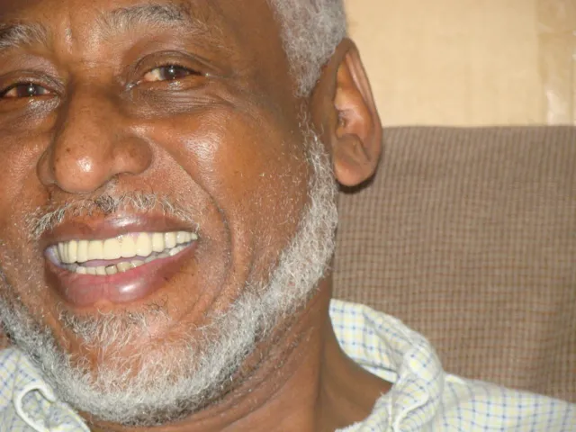

John Clark
For my dad. Always.
My father was John Clark.
He was a journalist, educator, communicator, husband, father, Pop-Pop, community advocate, and one of the smartest people I've ever known. But a list of what he accomplished isn't really how I knew him.
I knew him as Dad.
John “Shorty” Clark
My dad was born November 24, 1948, in Fort Valley, Georgia, the son of George Clark Sr. and Mary Clark.
He built a life around learning, communication, family and community.
He studied Liberal Arts at Lehigh Carbon Community College before graduating with honors from Lincoln University with a bachelor's degree in Psychology.
He continued his education at Bryn Mawr Graduate School and Princeton University and earned his master's degree in Social Work and Social Services.
1971
He became one of the first African Americans to win a Keystone Press Award for excellence in journalism.
My dad worked as an award-winning reporter and editor for The Morning Call for 13 years.
He was also one of only ten scholars selected to attend the Institute of Journalism Education at the University of Arizona, where he earned a certificate in Newspaper Editing and Management.
A Life in Communication
His career moved through journalism, education, government and community advocacy.
He developed and edited publications on education matters and government initiatives.
He taught communications at Cedar Crest and Muhlenberg Colleges.
In 1983, he ran for Pennsylvania State Representative in the 132nd District and became a candidate for the General Assembly.
In 1992, he joined the Pennsylvania Department of Education as Chief Media Consultant and Chief Spokesperson for the Secretary of Education.
In 1993, he began working for PSEA and spent more than 17 years serving its Wilkes-Barre, Allentown and Montgomeryville regions as a communications specialist and organizing program specialist.
But he was my dad.
My parents, John and Elizabeth Clark, were childhood sweethearts and the loves of each other's lives.
My sister Candice and I got to call him Dad.
And when he became Pop-Pop, there was another little girl who got to experience that love. His face would light up whenever he saw his granddaughter Mikayla.
His family was his world.
And he was ours.
September 2, 2010
My father died in an automobile accident on September 2, 2010, while on his way to work.
He was 61.
But there were 61 years before that day.
What He Left Me
I always say a father's relationship with his daughter is one of the most pivotal relationships a girl can have.
It teaches you about love and how you are loved. It shapes the way you see yourself. It can give you confidence in who you are and who you are meant to be.
You are your brand.
Something my father instilled in me.
I've carried those words with me throughout my life. They shaped the way I thought about making a space for myself, something distinctly mine, somewhere I could put my own personal seal on it.
Years later, when I began creating this version of NoelClark.com, that idea became part of the inspiration behind Personal Seal, P.S.
I think he would be proud of what I have created here. And it all began with my commitment to always have a place on the internet where people could read about my dad.
My amazing dad.
The Unsent Letter
After his accident, in the depths of my grief, I realized there were so many other people like me. People trying to live inside a world that had changed completely.
I wanted to write a letter to the world.
I wrote:
Everything will be OK.
And then I didn't share it.
Because I didn't feel OK.
How could everything be OK?
The sentence felt almost insulting in the face of grief. Too small for what loss actually does to you.
Sixteen years later, “Everything will be OK” became my first entry into The Mail Room.
Just in case someone needed to receive that note.